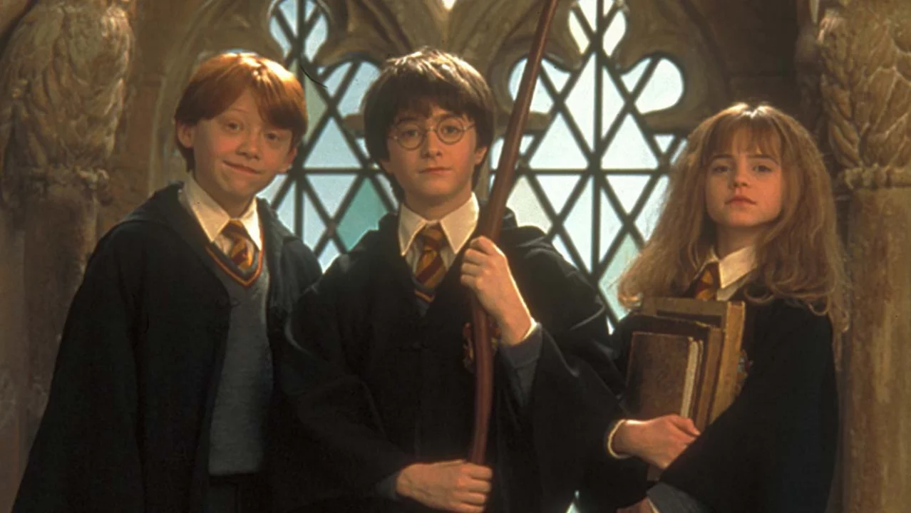
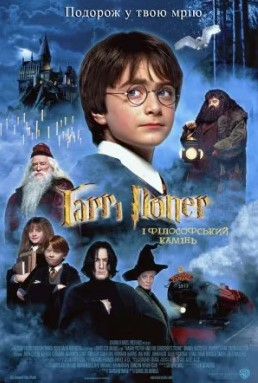
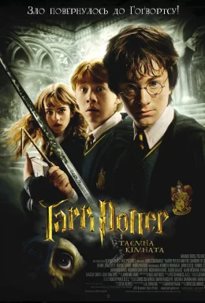
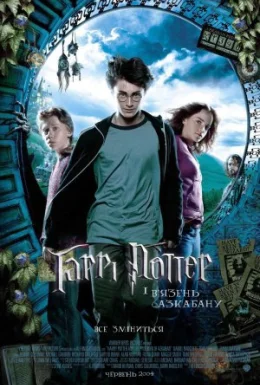
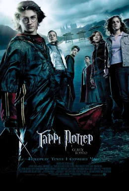
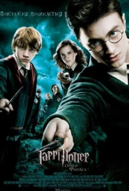
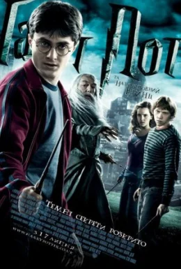
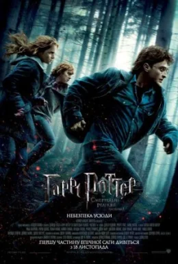
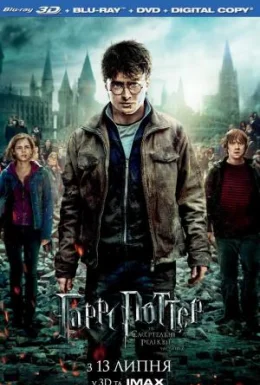

Серія фільмів про Гаррі Поттера
Серія про Гаррі Поттера - серія фільмів, заснованих на книгах про Гаррі Поттера англійської письменниці Дж. К. Роулінг. Серія випущена компанією Warner Bros. І складається з десяти фільмів в жанрі фентезі, включаючи основну серію - починаючи з «Гаррі Поттер і Філософський Камінь» (2001) і закінчуючи «Гаррі Поттер і Дари Смерті: Частина 2» (2011) - а також спін-офф «Фантастичні звірі і де їх шукати» (2016) і його сиквела «Фантастичні звірі: Злочини Грін-де-Вальда» (2018). У 2022 році очікується вихід тріквела «Фантастичних звірів».
Всі частини "Гаррі Поттер":
Гаррі Поттер і філософський камінь
Гаррі Потеру живеться несолодко, його постійно мучить зведений брат, а прийомні батьки ставляться до нього з презирством. Гаррі виповнюється десять років він середньостатистичний лондонський хлопчисько. В один прекрасний момент Гаррі розуміє, що має магічну силу. Хлопчик потрапляє в чарівну реальність, яка завжди була поруч по сусідству зі звичайним світом.
У новому світі Гаррі вступає в школу чарівництва Хогвартс, де знаходить безліч друзів і пригод. Перебуваючи в школі чарівників Гаррі стає фанатом місцевої спортивної гри званої Квідичем і з задоволенням бере участь у ній ... Кіно Гаррі Поттер і філософський камінь подивитися в хорошій якості безкоштовно.
Гаррі Поттер і таємна кімната
Юний чарівник Гаррі Поттер переходить на другий курс школи «Хогвартс». Пригоди хлопчика починаються вже з самої дороги в школу. Доббі, домовик ельф, перекриває стіну до станції і Гаррі з друзями не потрапляють на поїзд. Йому доводиться шукати новий спосіб яким можна дістатися до «Хогвартса». Що ж його чекає там?
Гаррі стикається з щоденником Тома Редла і дізнається деякі моменти дитинства ВолДеМорта.
Герої стикаються з новою проблемою - Василіском, який полює за «бруднокровкою». Гаррі чує Василіска і розуміє, що він вміє розмовляти зі зміями. Чарівник в потрібний момент застосовує свої нововідкриті навички і відкриває Таємну Кімнату, щоб врятувати сестру Рона Візлі. Том Редл висмоктує з Джині досить життєвої енергії, щоб перетворитися з простого спогаду в реального чарівника. Він, керуючи Василіском, намагається вбити Гаррі і Рона. Гаррі дістає з розподільного капелюха ґрифіндорський меч і встромляє в Василіска, але той встигає вкусити Поттера, отруюючи його смертельною отрутою.
вдасться Гаррі врятуватися? Що сталося в Герміоною? І чи виживе Джіні? Ви дізнаєтеся відповіді на ці питання, подивившись «Гаррі Поттер і таємна кімната».
Гаррі Поттер і в'язень Азкабану
Світ магів під загрозою! З найнебезпечнішої в'язниці втік Сіріус Блек, той, який зрадив батьків Гаррі Поттера, здав їх місцезнаходження ВолДеМорту, той, хто вбив свого друга Пітера Петтігрю. Єдиний чарівник, який зумів втекти з Азкабану і при цьому ще й залишитися при здоровому глузді і добрій пам'яті! Інтригуюче? А якщо додати до цієї інформації і те, що Сіріус Блек хрещений батько Гаррі? Цю інформацію намагалися приховати від Гаррі, знаючи, як чарівник це сприйме. Всі очікували, що Сіріус почне полювати на Поттера, щоб убити. А замість цього Гаррі почали приходити подарунки від невідомого відправника. Юний чарівник і не намагався ховатися від свого хрещеного, як би не охороняли його маги, він все-таки шукав зустрічі з Сіріусом. Йому потрібні були відповіді на питання, які терзали його душу. Як? Як міг кращий друг його батька стати зрадником? Чому він вбив Петтігрю? Але Сіріус і не намагався полювати, принаймні за Гаррі. За чиєю душею він прийшов? Навіщо йому так сильно хотілося визволитися з Азкабану? Кого він шукає? І чи дійсно Блек зрадник? Дивіться «Гаррі Поттер і в'язень Азкабану».
Гаррі Поттер і келих вогню
Пригодницький фентезі фільм «Гаррі Поттер і Кубок вогню» - це четвертий фільм із серії, що роповідає про Гаррі Поттера. Для героя і його друзів закінчився черговий рік в Гоґвартській школі магії. Повернувшись після літніх канікул і вступивши на четвертий курс, Гаррі дізнається, що в цьому році буде проводитися Тричаклунський турнір. Відбір на змагання проводиться за допомогою стародавнього магічного артефакту під назвою «Кубок Вогню». Яке ж було здивування Гаррі, коли виявилося, що свою школу представлятиме саме він, навіть не дивлячись на те, що два інших учасники старші і сильніші. Попереду трьох чарівників чекає велика кількість випробувань і дуже запекла боротьба за перемогу. До всього іншого, Гаррі потрібно бути насторожі, бо ВолдеМорт з кожною хвилиною стає сильнішим, і в будь-який момент може повстати...
Гаррі Поттер та Орден Фенікса
Після подій описаних в минулій частині фільму темний маг ВолдеМорт воскресає. Для Гаррі Поттера, який вже почав п'ятий рік навчання в Гоґвортсі, настає найскладніший час в його житті, адже тепер йому належить знайти спосіб як назавжди покінчити з вбивцею батьків. Однак більшість вчителів і учнів школи заперечують факт повернення найнебезпечнішого злочинця, і роблять вигляд, що нічого не сталося. І тільки друзі та близькі Гаррі організовують Орден Фенікса, щоб захистити юного чарівника і дати відсіч ВолдеМорту. В цей час в школі починають проводити курс лекцій, який повинен навчити молодих чарівників захисній магії, але незабаром з'ясовується, що на практиці це все просто марно. Тоді Гаррі, Герміона і Рон приймають рішення організувати свої власні курси, щоб учні насправді могли протистояти темним силам.
Гаррі Поттер і напівкровний Принц
Тепер весь світ чарівників і магів відчуває величезну силу ВолДеМорта і навіть Гоґвартс вже не зможе захистити їх. Оскільки фінальна битва, на думку Дамблдора, вже дуже близько, він намагається підготувати до неї Гаррі. Вони разом не залишають спроб дізнатися секрет безсмертя ВолДеМорта. Саме з цієї причини в Гоґвартс запрошується старий друг Дамблдора - професор Горацій Слізнорт, кращий фахівець по трунках, від якого він хоче отримати всю інформацію про горокракси. Дамблдор просить Гаррі увійти до нього в довіру.
У той же час у учнів розквітають романтичні відносини. Гаррі Поттер стає байдужим до Джинні, а Лаванда Браун по вуха закохується в Рона. Але, не дивлячись на це, попереду чекає величезна біда, і Гоґвартс вже навряд чи колись стане таким, яким він був.
Гаррі Поттер та Смертельні Реліквії: Частина перша
Школа чарівників «Хогвартс» назавжди тепер закрита для Гаррі, Герміони і Рона. Вони оголошені в світі магів ворогами номер один. Наші герої ховаються в незатишному наметі в лісі, постійно переміщаючись, щоб їх не знайшли. Гаррі намагається зрозуміти, для чого Дамблдор залишив їм такий ось спадок, що він цим хотів сказати? Смерть директора школи залишила після себе безліч питань, відповіді на які ховаються в самих закутках світу магів. Міністерство впало, Хогвартс захопили вороги. Підтримки чекати нізвідки. Здається, смерть ВолДеМорта - недосяжна мета. Але наші герої не здаються. У пошуках відповідей на питання вони потрапляють в Долину, де померли батьки Гаррі. Друзі зустрічають там давню знайому Дамблдора, сподіваючись, що меч Грифірдора знаходиться у неї. В іншому випадку їм просто нічим буде знищити знайдені горокракси. ВолДеМорт радіє, адже він поставив світ на коліна. В серцях людей оселився страх і жах. Вся надія на єдиного юного чарівника, доля якого - врятувати світ. Чи зможе наш герой виправдати надії? Чи переможе Добро над Злом? Про це ви дізнаєтесь, подивившись фільм «Гаррі Поттер і Дари смерті: Частина 1».
Гаррі Поттер та Смертельні Реліквії. Частина друга
Гаррі продовжує свої пошуки горокраксів. Коли, здавалося, що немає надії на порятунок, промінь світла і любов до друзів, світу, людей буде світити в його душі. Він не здається і шукає вихід, навіть тоді, коли всі вже перестали вірити в чудо, говорячи, що чудес не буває. Гаррі з друзями вивчає історію, багато дізнається про минуле свого улюбленого директора Дамблдора. Волдеморт теж не дрімає. Але в пошуках одного з Дарів Смерті, а саме найсильнішої в світі чарівної палички, забуває про свої шматочки душі. Знайшовши всі горокракси, Гаррі нарешті дізнається всю правду про самого себе. Завіса недомовок і непорозумінь спадає ... Чому ж Поттер вміє розмовляти зі зміями, як він викрутиться з усіх цих колотнеч, чи буде світ врятований, в чому таємниця професора Снейпа і скільки героїв помре в цьому фільмі - про все це ви дізнаєтесь, подивившись заключну частину «Гаррі Поттер та Смертельні Реліквії ».